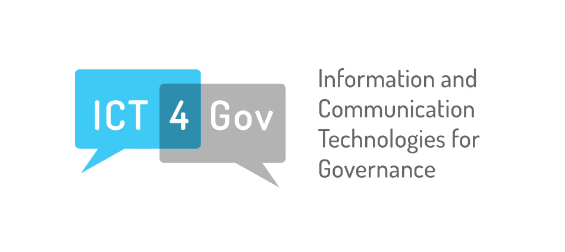

Data Analytics for Procurement
Logo and branding for the Digital Engagement Initiative.
Digital Engagement
Logo and branding for the Digital Engagement Initiative.
Procurement Stories

Logo and branding for the Digital Engagement Initiative.
Infographic
GEI Website
Governance for Extractives Industries
Open Government
Logo and website design for the Open Government Initiative.

ICT4Gov
Logo and Website for the ICT4Gov program at the World Bank - 2011
This is a retired project.
Logo Created for the ICT4Gov Project

Interface design project